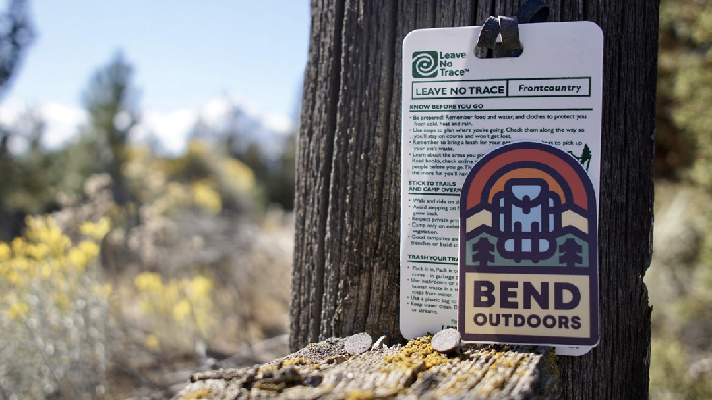
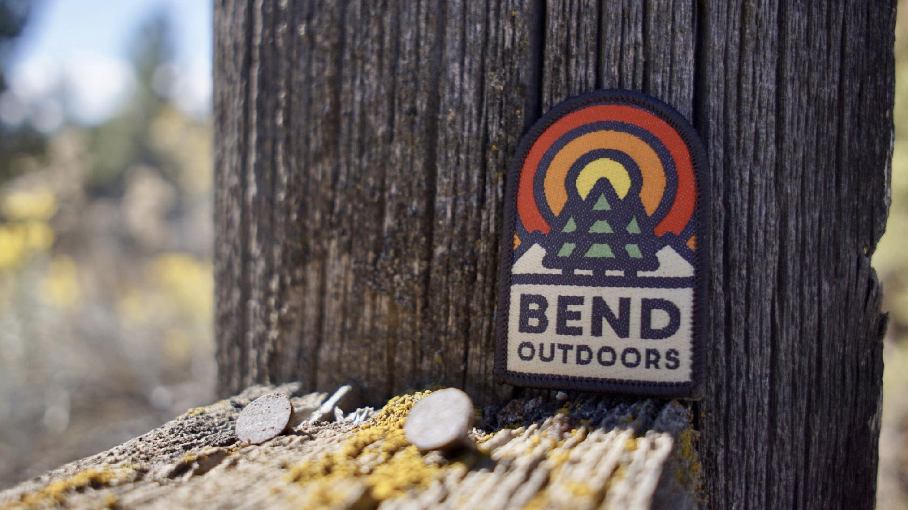

← Return to Homepage — Bend Outdoors

Bend Outdoors
Bend Outdoors is a small, non-profit organization in Bend, Oregon. Their mission is to promote outdoor activities in the area, raise awareness about local conservation issues, and support local non-profits. They hired me to create their logo and a few pieces of merchandise.


Social Media Links
Inspiration
01. National park signage
02. Colors found in nature
03. Draplin's thick lines ↗
Project Details
Designed in 2018
Credits
Photos taken by Timmy Crawford